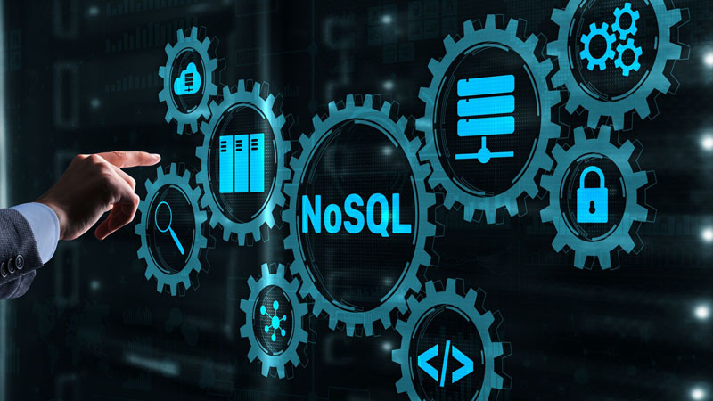

lenguajes de programación más usados actualmente
Los lenguajes de programación son los que hacen posible que todos los servicios, sitios y entornos digitales que hoy utilizamos, sencillamente puedan funcionar. Por eso existe una gran variedad en cuanto a opciones y elegir en cuáles invertir nuestro tiempo puede no ser tan fácil.
Hoy, en la era de los datos, dominar diferentes lenguajes de programación es un aspecto básico en el desarrollo de soluciones de software, sistemas y tecnologías de la información. Además, es simplemente elemental en cuanto a competitividad.
Pero si te interesa estudiar programación o formarte profesionalmente en tecnologías de la información, también es importante utilizar tu tiempo de forma óptima, para lo cual seguro te va a interesar elegir aprender aquellos lenguajes de programación que te abran más puertas en el mercado.
JavaScript
JavaScript, que se utiliza en desarrollo web, desarrollo de videojuegos, aplicaciones móviles y construcción de servidores web, sigue siendo entonces el lenguaje de programación más utilizado en la actualidad, en todo el mundo

Y esto se debe a dos buenas razones: lo utilizan la gran mayoría de los navegadores web y es considerado como uno de los lenguajes de programación más fáciles de aprender. Prácticamente no requiere de conocimientos previos en codificación, y una vez que se empieza a aprender, es posible practicar y divertirse con él de inmediato.
HtML
HTML es la sigla del inglés HyperText Markup Language (lenguaje de marcado de hipertexto) y refiere al lenguaje de marcado para la elaboración de páginas web.

Es otro de los lenguajes más accesibles en el mundo de la programación, lo cual, tal como en el caso de JavaScript, en buena medida también explica su popularidad. Se utiliza en documentos y en el mantenimiento de sitios web. En esencia, es un lenguaje de marcado que permite dar formato a la apariencia de la información en un sitio web.
NoSQL
Si bien no es un lenguaje de programación, NoSQL se refiere a una amplia clase de sistemas de gestión de bases de datos que se diferencian de los modelos relacionales tradicionales.

Si bien no es un lenguaje de programación, NoSQL se refiere a una amplia clase de sistemas de gestión de bases de datos que se diferencian de los modelos relacionales tradicionales.
Rust
Rust es un lenguaje de programación compilado, de propósito general y multiparadigma, desarrollado por la Fundación Mozilla. Se utiliza para el desarrollo de sistemas operativos, realidad virtual y navegadores web.
Si bien solo el 7,03 % de los desarrolladores entrevistados aseguró utilizar el lenguaje Rust —más del doble que el año anterior (3 %)—, en 2021, más del 86 % de los desarrolladores afirmaron estar interesados en seguir aprendiendo y desarrollando con él. En ese sentido, aprender a utilizarlo representa una interesante ventaja competitiva.
 "
" "
"